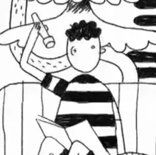

Pas 1. Presentació
La literatura infantil traspassa les barreres de l’edat; criatures i adults ens sentim sovint atrets per les seves històries, per les il·lustracions que els donen vida i pel tractament de temes universals que hi fan els autors. Però, davant la diversitat de publicacions, cap on ens decantem un cop som a la llibreria?
